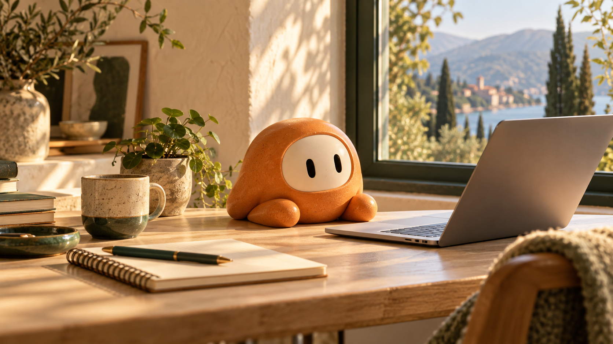
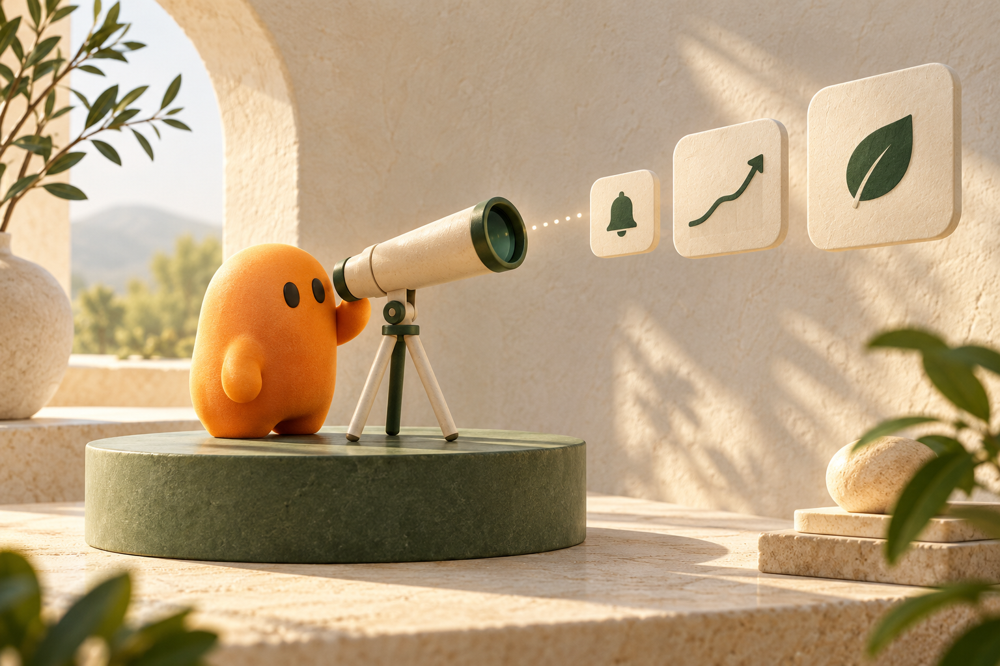

01
«Quiero lanzar mi aplicación o negocio online».
Una aplicación que puedes probar
Le cuentas lo que quieres. Te conoce, organiza el trabajo y lo lleva a una entrega que puedes ver.

Con tu contexto, tus permisos y tus límites.
01 / Lo que puede hacer por ti
Un compañero puede tener varias misiones. Estos ejemplos orientan; puedes pedir algo libremente.
«Quiero lanzar mi aplicación o negocio online».
«Ayúdame a entender esto y decidir mejor».

«Mantente atento y avísame cuando importe».
02 / De una conversación a una entrega
Explora los pasos. Pausa, mira la entrega o pide una corrección.
Objetivo y conversación en el mismo lugar
Una idea desordenada sirve. El compañero te ayuda a convertirla en un objetivo concreto.
Demostración conceptual · los botones recorren un ejemplo, sin ejecutar agentes ni desplegar aplicaciones.
03 / Lo que aprende contigo
Recuerda tus gustos y objetivos. Cada misión conserva su propio contexto. Puedes ver y corregir lo que sabe de ti.
Lo que decides compartir alimenta su memoria. Podrás consultarlo y corregirlo desde la web.
04 / Autonomía con límites claros
Las dudas, los permisos y el presupuesto son decisiones diferentes.
Por defecto, pregunta. Puedes activar decisiones autónomas.
Permisos aparte: restrictivo, YOLO o personalizado.
Generales + ajustes para cada misión.
Opcional, muy recomendable. Planifica hacia algo presentable.
Algo que puedes ver y probar.
Estima también el trabajo que queda.
Pausa cuando quieras. Cambia el objetivo con una acción explícita.
Versiones con Git. GitHub es opcional.
Entre bastidores
Los agentes se comunican, revisan el trabajo y ajustan cómo trabajan. Roles ilustrativos.
Revisan el objetivo, el progreso y las prioridades para repartir el trabajo disponible.
05 / Capacidad para trabajar
La opción preferida: nuestra suscripción con el consumo de IA incluido.
Nombres, precios y límites por definir después de medir el trabajo real. Barras ilustrativas.
Conectar una API key de tu proveedor.
Cuando el proveedor admita nuestro caso.
OpenRouter es candidato para suministrar y medir IA. El proveedor final sigue pendiente. Los gastos de las aplicaciones creadas van aparte.
Esquema ilustrativo. El Supabase de usuarios pertenece a nuestra plataforma; los proyectos que creen los compañeros pueden tener sus propias cuentas conectadas.
La idea que une todo